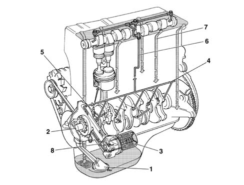
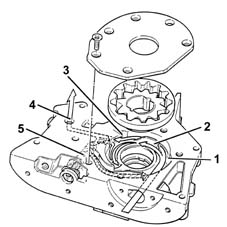
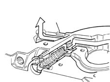
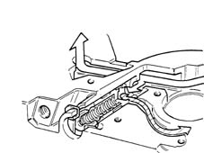
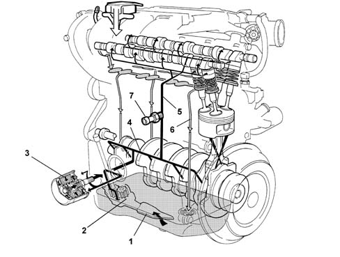
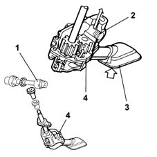
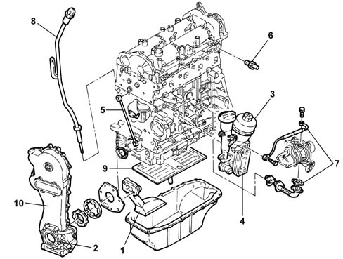
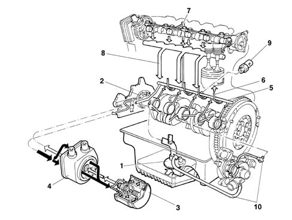

Introduction - ENGINE LUBRICATION SYSTEM
- Path
- Descriptions > 10 ENGINE > 1084 ENGINE LUBRICATION > Introduction - ENGINE LUBRICATION SYSTEM
- Kind
- system description
- Applies to
- engines: 1.2 8v, 1.6 16v, 1.3 JTD 16V, 1.9 JTD 8V; all production periods
- Interactive page
- https://sloeber94.github.io/elrnDB-fDbl/en/#/2585391
Applies to: engines: 1.2 8v; all production periods
Engine oil supply circuit
The engine oil supply circuit is shown in the following figure.

1, Suction pipe with filter mesh
2, Oil pump
3, Oil filter cartridge
4, Main longitudinal duct
5, Jets (piston skirt cooling)
6, Vertical duct (camshaft support lubrication)
7, Oil return to the sump
8, Switch for engine oil pressure warning light
Engine oil pump
The engine oil is drawn in from the sump by means of the vacuum built up by the rotation of the gears fitted on the crankshaft.
Vacuum is present between the gear partition (2) and the oil sump suction pipe.
Pressure instead develops after the separating wall (2) in all the oil delivery pipes (4).
When the pressure exceeds 5 bar, the force exerted on the limiting valve (5) overcomes the reaction of the spring below and moves the valve to open the connecting pipe between the pressure chamber (3) and the low pressure chamber (1).

1, Low pressure chamber
2, Separating wall
3, Pressure chamber
4, Oil delivery pipe
5, Pressure limiting valve
Closed operating position of oil pressure limiting valve.
The figure shows the valve in closed position.

Bypass operating position of limiting valve.
The figure shows the valve in open position.

Applies to: engines: 1.6 16v; all production periods
Engine oil supply circuit
The engine oil supply circuit is shown in the following figure.

1, Suction pipe with filter mesh
2, Oil pump
3, Oil filter cartridge
4, Main longitudinal duct
5, Camshaft bearings vertical duct
6, Oil return to the sump
7, Engine oil pressure warning light switch
Engine oil pump
The engine lubrication system is pressurized by a geared pump fixed to the crankcase.
The pump is operated by the gear through the auxiliary shaft. A restricter valve controls the system pressure.
During the intake, the oil is filtered through a mesh filter in the inlet casing and then through a replacable filter element, in the fuel line.

1, Auxiliary shaft
2, Restricter valve
3, Gauze filter
4, Pump casing
Applies to: engines: 1.3 JTD 16V; all production periods
STRUCTURE
The engine lubrication system is represented below.

1 - Suction pipe with filter mesh
2 - Oil pump
3 - Oil filter cartridge
4 - Heat exchange (water oil) for cooling engine oil
5 - Spray jet (timing chain lubrication)
6 - Engine oil pressure warning light switch
7 - Turbocharger lubrication
8 - Engine oil level dipstick
9 - Engine oil level maintenance and scraper wall
10 - Timing chain cover
Applies to: engines: 1.9 JTD 8V; all production periods
VIEW OF ASSEMBLY
.

1, Suction pipe with filter mesh
2, Oil pump
3, Oil filter cartridge
4, Water/oil heat exchanger
5, Main longitudinal duct
6, Jets (piston skirt cooling)
7, Vertical duct (camshaft support lubrication)
8, Oil return to sump
9, Engine oil pressure warning light switch
10, Turbocharger lubrication pipes
ENGINE OIL PUMP
The engine oil is drawn in from the sump by means of the vacuum created by the rotation of the sprockets fitted on the crankshaft.
Vacuum is present between the sprocket separating wall (2) and the oil sump suction pipe.
Pressure instead develops after the separating wall (2) in all the oil delivery pipes (4).
When the pressure exceeds 5 bar, the force exerted on the limiting valve (5) overcomes the reaction of the spring below and moves the valve to open the connecting pipe between the pressure chamber (3) and the low pressure chamber (1).
1, Low pressure chamber
2, Separating wall
3, Pressure chamber
4, Oil delivery pipe
5, Pressure limiting valve
ENGINE OIL PUMP
Closed operating position of oil pressure limiting valve.
ENGINE OIL PUMP
Bypass operating position of limiting valve